Provides a simple way to generate plots of pdfs, probability mass functions, cdfs, probability histograms, and normal-quantile plots for distributions known to R.
plotDist(dist, ..., xlim = NULL, ylim = NULL, add, under = FALSE, packets = NULL, rows = NULL, columns = NULL, kind = c("density", "cdf", "qq", "histogram"), xlab = "", ylab = "", breaks = NULL, type, resolution = 5000L, params = NULL)
Arguments
| dist | A string identifying the distribution. This should work
with any distribution that has associated functions beginning
with 'd', 'p', and 'q' (e.g,
|
|---|---|
| … | other arguments passed along to lattice graphing routines |
| xlim | a numeric vector of length 2 or |
| ylim | a numeric vector of length 2 or |
| add | a logical indicating whether the plot should be added to the previous lattice plot.
If missing, it will be set to match |
| under | a logical indicating whether adding should be done in a layer under or over the existing
layers when |
| packets, rows, columns | specification of which panels will be added to when
|
| kind | one of "density", "cdf", "qq", or "histogram" (or prefix of any of these) |
| xlab, ylab | as per other lattice functions |
| breaks | a vector of break points for bins of histograms,
as in |
| type | passed along to various lattice graphing functions |
| resolution | number of points to sample when generating the plots |
| params | a list containing parameters for the distribution. If |
Details
`plotDist` determines whether the distribution is continuous or discrete by seeing if all the sampled quantiles are unique. A discrete random variable with many possible values could fool this algorithm and be considered continuous.
The plots are done referencing a data frame with variables
x and y giving points on the graph of the
pdf, pmf, or cdf for the distribution. This can be useful in conjunction
with the groups argument. See the examples.
Examples
plotDist('norm')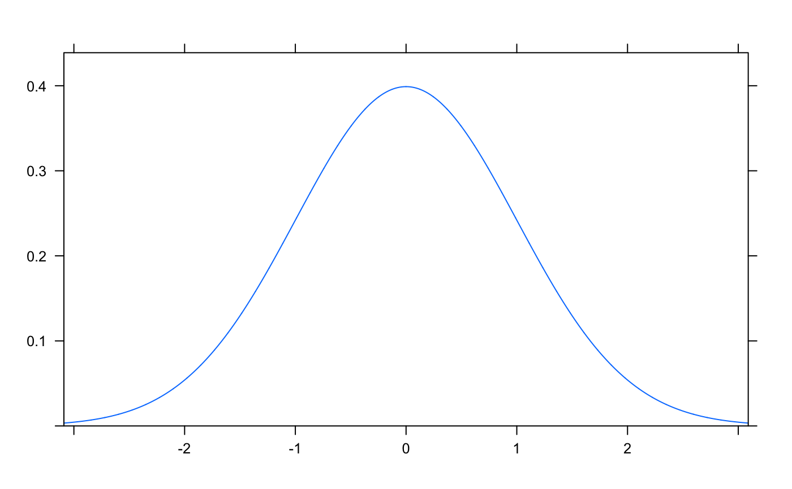plotDist('norm', type='h')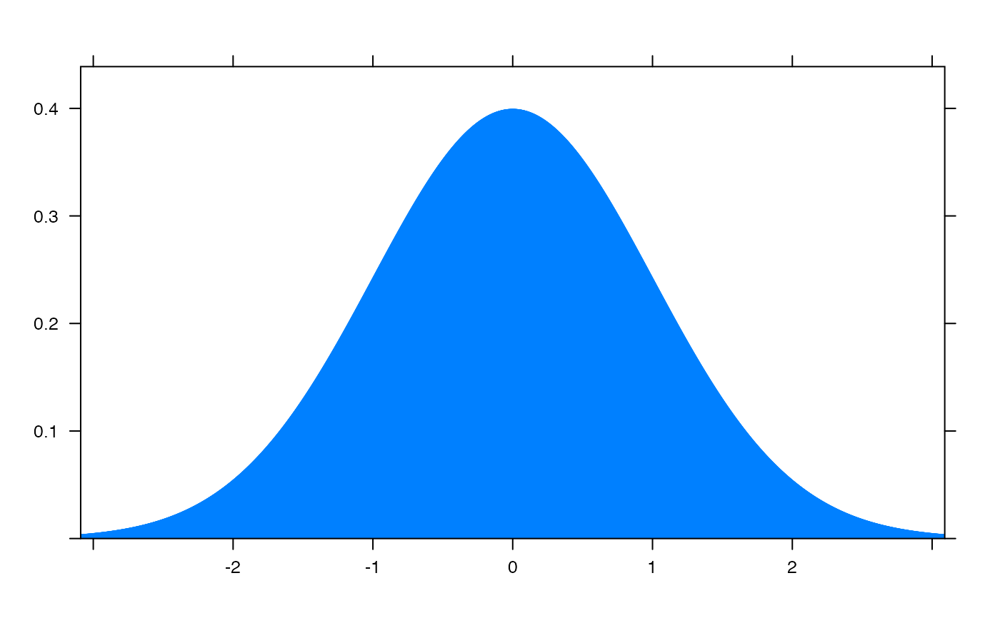plotDist('norm', kind='cdf')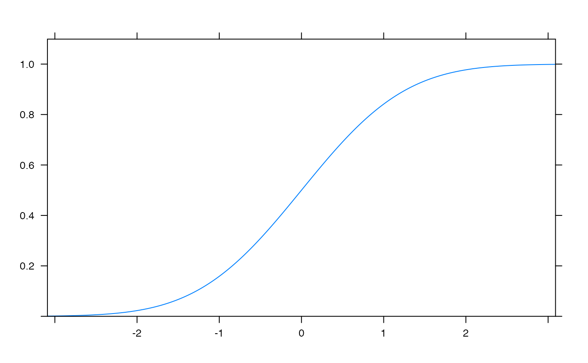plotDist('exp', kind='histogram')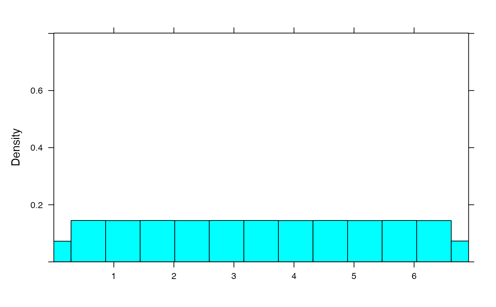plotDist('binom', params=list( 25, .25)) # explicit params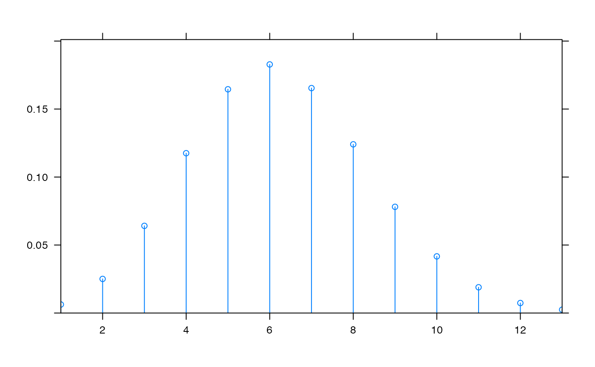plotDist('binom', 25, .25) # params inferredplotDist('norm', mean=100, sd=10, kind='cdf') # params inferred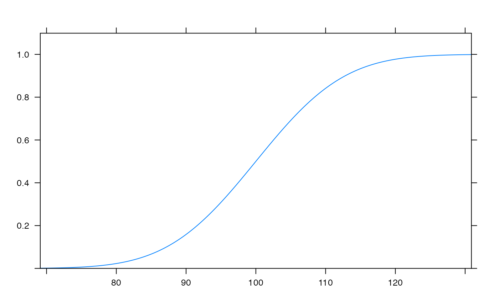plotDist('binom', 25, .25, xlim=c(-1,26) ) # params inferred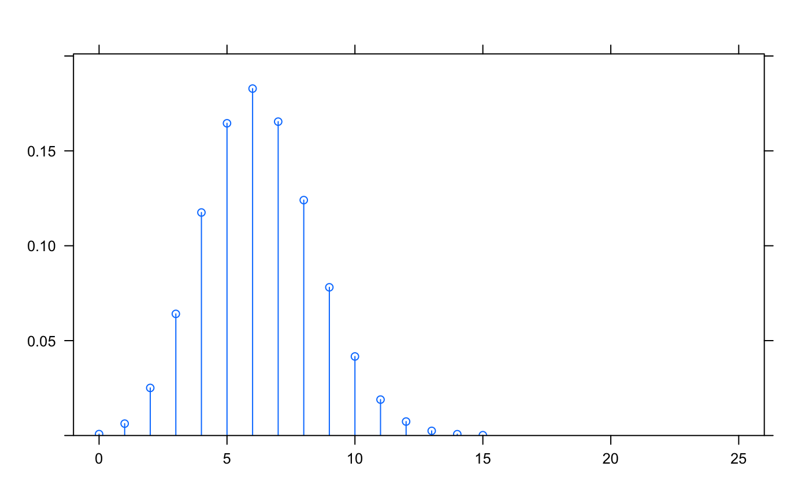plotDist('binom', params=list( 25, .25), kind='cdf')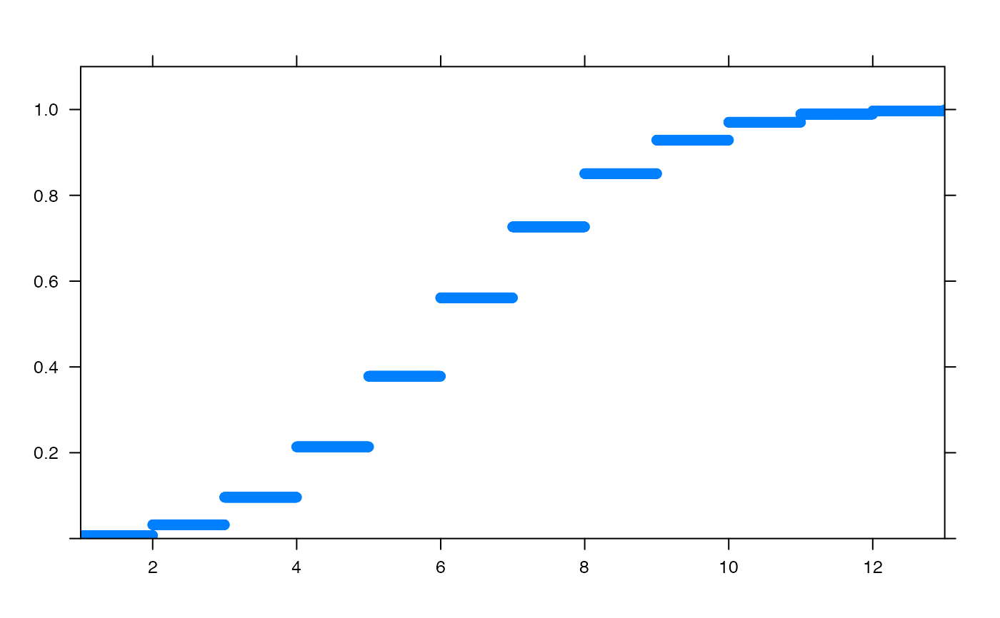plotDist('beta', params=list( 3, 10), kind='density')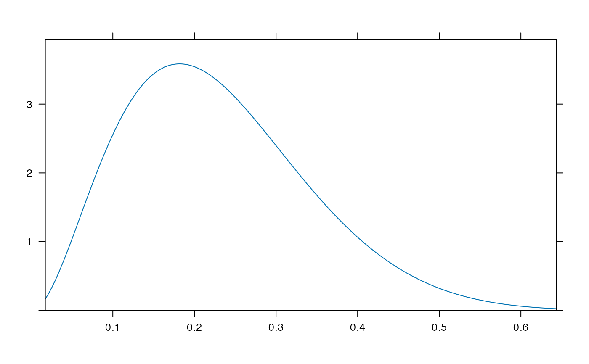plotDist('beta', params=list( 3, 10), kind='cdf')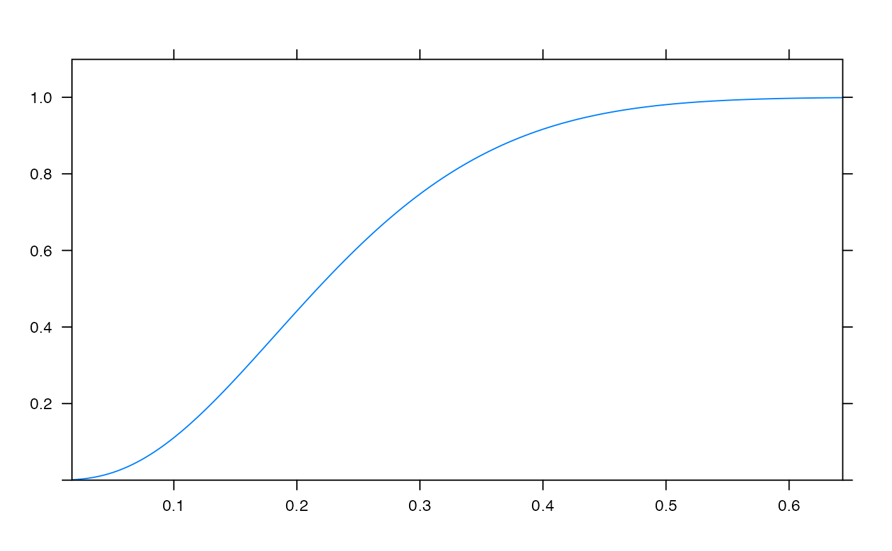plotDist( "binom", params=list(35,.25), groups= y < dbinom(qbinom(0.05, 35, .25), 35,.25) )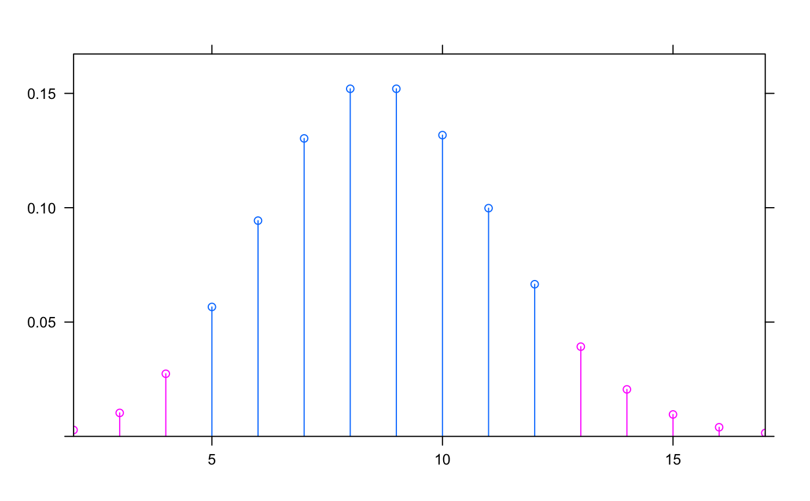plotDist( "binom", params=list(35,.25), groups= y < dbinom(qbinom(0.05, 35, .25), 35,.25), kind='hist')plotDist("norm", mean=10, sd=2, col="blue", type="h")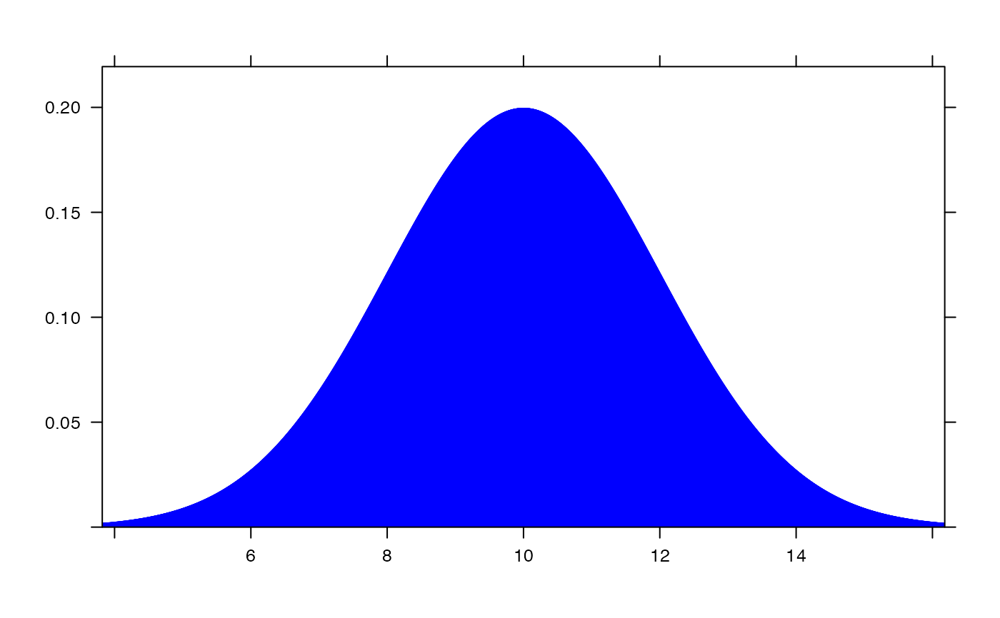plotDist("norm", mean=12, sd=2, col="red", type="h", under=TRUE)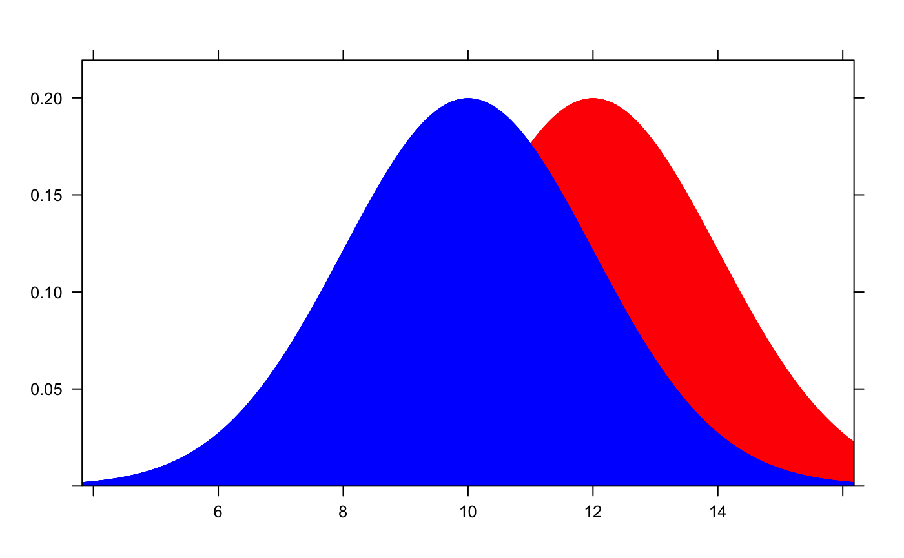plotDist("binom", size=100, prob=.30) + plotDist("norm", mean=30, sd=sqrt(100 * .3 * .7))plotDist("chisq", df=4, groups = x > 6, type="h")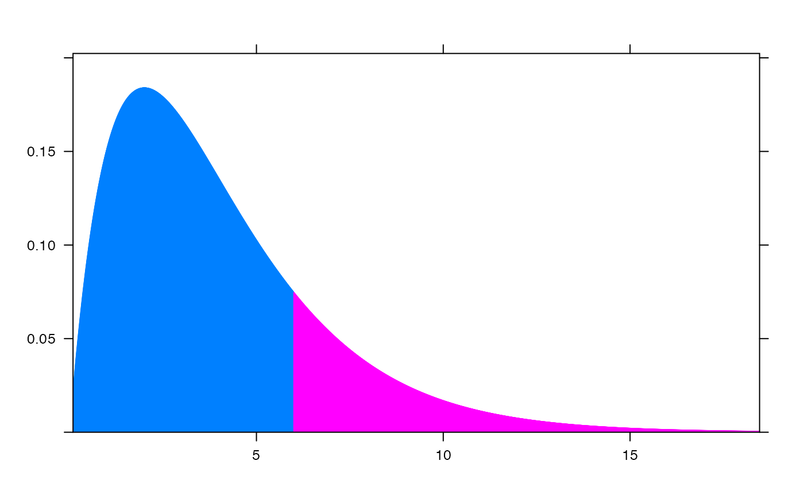plotDist("f", df1=1, df2 = 99)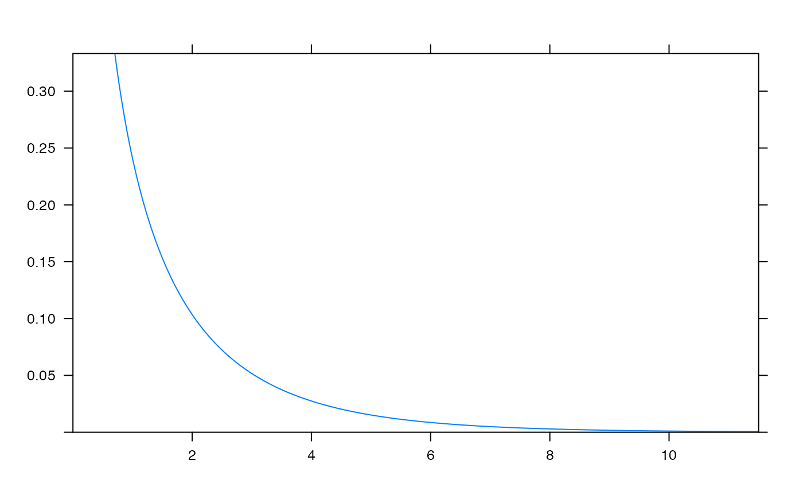if (require(mosaicData)) { histogram( ~age|sex, data=HELPrct) m <- mean( ~age|sex, data=HELPrct) s <- sd(~age|sex, data=HELPrct) plotDist( "norm", mean=m[1], sd=s[1], col="red", add=TRUE, packets=1) plotDist( "norm", mean=m[2], sd=s[2], col="blue", under=TRUE, packets=2) }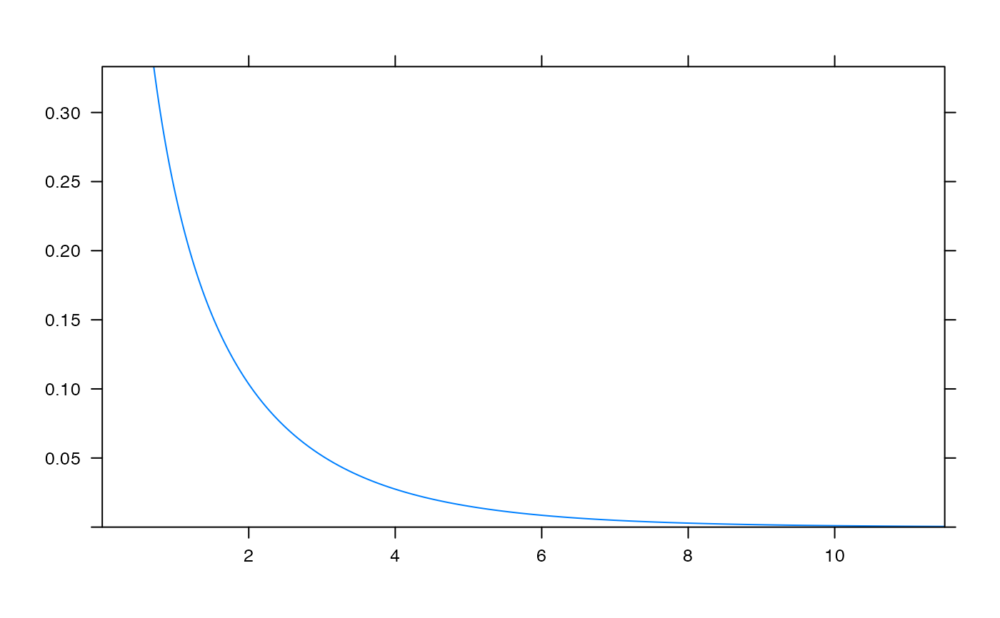